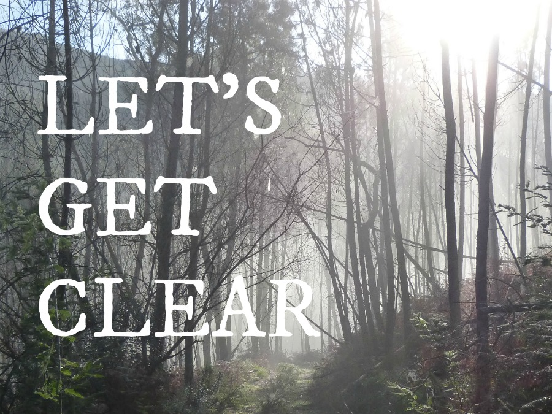

Writing your website can feel like being lost in the woods.
You know where you want to end up: with a site that's clear, professional, you. That connects with your right clients, and makes their choice to work with you easy. And there's plenty to keep you busy on the path: you love what you do, love explaining the method behind your work and the approach you've honed over the years.But when you start writing, the clarity just isn't there. You can't quite see how you'll get to where you need to be.
You don't just want to list your services and your experience. You're more than that. You want to resonate with your people, to tell the story of you and your business (without oversharing or boring your readers). To be human, professional, and relatable. To build a brand that's authentic and sustainable and true to your values.
For your future clients to get a sense of who you really are, and how you can help them. For them to understand what you do, and why.
Your work is transformative. You're doing good in the world. But it's not magic. You have skills that you've spent years honing, and you want to sum them up without sounding flaky, cheesy, or like everyone else on the web.
You love writing - but when you read the words back, something about your About page, or the services you offer, just doesn't chime. Hitting publish doesn't feel right.
So you start again, one more time, from the top - and you're back in the woods again.
Writing your website is taking so much time! Time that could be spent working with clients, connecting, creating - doing the things you love to do.
"Madeleine takes the time to understand your essence before reflecting it in beautiful words." (Dr Carolyn Eddlestone, Cycles of Change)

Finding the path
I've spoken to loads of entrepreneurs who find it hard to put their work into words, so I get it. It's not that you don't enjoy telling your dream clients how you can serve them.But you get tired of repeating yourself and you hate the fact that the words you use are starting to sound tired, too. You wish your website could act as a virtual host, welcoming people in and showing them around. You, but you on your best day: bright and open-hearted and delighted to walk your visitors through your process, share your story, and invite them to become your clients.
Often, the thought of having someone else write for you doesn't seem realistic. What if they can't get your style? What if you sound even less authentic?
You want to be involved - you enjoy the process. It would just be great to have someone on your side who'd take the time to get to know you and your craft, who'd get excited about finding the right words.
Someone you could throw your jumble of ideas at and would be able to pick out the silver thread that connects them, and hold it up for you to look at.
Someone who'd give you honest, objective feedback.
Someone with standards as high as yours, to help reflect back the impact you're making, so that your right clients will find you and know they're home.
"I honestly would not have been able to gain the objectivity that you have captured here by myself."
(Lorna Clansey, Lorna Clansey Wellbeing)

Take my hand
It's time to find the truth in what you're doing, and bring it out into the world. Imagine having a writing ally with the right words at their fingertips. Someone who believes in what you're doing and is excited to discover what's unique about you and byour work. Imagine being able to get feedback on from an experienced writer and editor; to start a collaborative journey with someone you could return to in future.
A writer on your side
Words are more than my passion. They're how I appreciate and make sense of the world. I have a degree in English Language and Literature from Oxford University.And I love clear communication. In fact, I think it's the most powerful tool we have. My Masters dissertation at King's College, London focussed on how collaborative working happens in schools. I learned that boundaries dissolve and magic happens when we put down the jargon and "how it's meant to be done" and tell our stories openly, from the heart.
I'm energised by connecting dots, discovering threads, opening up your passion for the work you do and pairing it with your desire to share who you are.
I've worked in large organizations, from local authorities to world class Universities, and I've helped write and edit copy from legal submissions to press releases.
Now, I help small businesses and entrepreneurs connect with their clients through compelling blogs and sparkling web copy. I'm the one my clients turn to when they wonder "what's the right word?". My favourite thing in all the world is to weave some magic, set a scene and share a story. And I'd love to help you tell who you are.
Express Your Essence
Express your essence is a package of three fully written and edited web pages - typically your home page, about page and sales/service page - for your site. My process involves two Skype calls and two rounds of revisions, so that I can get to know you and your work deeply, and transform it into words that make you smile. We'll dig deep into who you are, what you do and why, to tell your unique story ina way that feels authentic and creative.
The investment for the full copy for 3 webpages, including edits and your own brand stylesheet to keep, is £250.
 Your first step? Click this button and send me an email.
Let's start
Tell me who you are and what your work is. Let's get to know each other.
(Not into button clicking? My address is madeleine at madeleineforbes.co.uk)
I'll write back, asking you for some logistics. We'll agree a schedule, I'll send you over the prep materials you need to start sharing who you are, and we'll begin making some magic.
Ready? I couldn't be happier. Just click the button below, send me that email, and we'll do this.
Your first step? Click this button and send me an email.
Let's start
Tell me who you are and what your work is. Let's get to know each other.
(Not into button clicking? My address is madeleine at madeleineforbes.co.uk)
I'll write back, asking you for some logistics. We'll agree a schedule, I'll send you over the prep materials you need to start sharing who you are, and we'll begin making some magic.
Ready? I couldn't be happier. Just click the button below, send me that email, and we'll do this.
I'm ready